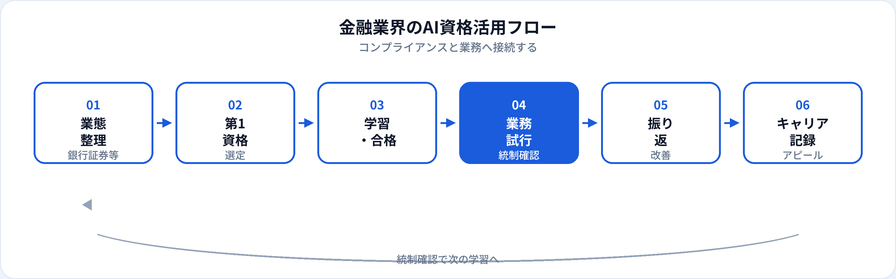

金融業界はコンプライアンス・個人情報保護・説明責任のハードルが高く、生成AIの導入も慎重に進む業界です。一方、文案・要約・社内説明・研修資料など、機微情報を入力しない範囲ではAI活用の余地が広がっています。本記事では、銀行・証券・保険・フィンテックで働く方が取るべきAI資格を業態別・職種別に整理し、2026年6月時点で安全な活かし方とキャリアまで解説します。経理・財務職向けは別記事、金融×DS転職は別記事、3資格比較は初心者向け比較も参照してください。
金融業界にAI資格が効く理由
金融はもともとデータとリスク管理の業界です。AI資格は、ツールを漫然と使うのではなく、何を入力してよいか・誰が最終確認するかをチームで共有するための共通言語になります。
コンプライアンスとの接続
個人情報・情報管理・AIガバナンスの章が、社内規定・金融庁ガイドライン理解のたたき台になる。
説明業務の効率化
投資説明・契約説明・社内稟議・研修資料の文案・構成案を速く作り、専門判断に時間を割ける。
FinTech・AI案件への参画
与信モデル・不正検知・チャットボット導入時に、非エンジニアがリスク説明役として関与しやすくなる。
試験対策はこちら
業態別：銀行・証券・保険・FinTech
| 業態 | AI資格の主な役割 | 試行しやすい業務（例） | 第1候補 |
|---|---|---|---|
| 銀行 | 顧客対応文案、社内稟議、研修資料 | FAQ回答案、手続き説明、部内報告の骨子 | 生成AIパスポート |
| 証券 | 投資説明・レポート要約の文案支援 | マーケコメント構成案、社内勉強会資料 | 生成AIパスポート（未公開情報は入力しない） |
| 保険 | 契約・保全・クレーム説明の文案 | 約款説明のたたき台、社内マニュアル更新案 | 生成AIパスポート |
| FinTech | プロダクト説明、リスク記載、利用規約整理 | 機能比較リスト、リリースノート文案 | 生成AIパスポート → G検定 |
職種別の第1候補
| 職種・部門 | 第1候補 | 第二候補（任意） |
|---|---|---|
| 営業・RM・FP | 生成AIパスポート | —（営業向け記事） |
| 事務・オペレーション | 生成AIパスポート | ITパスポート |
| 企画・経営企画 | 生成AIパスポート | G検定（企画向け） |
| コンプライアンス・法務 | 生成AIパスポート | —（リスク章が中心） |
| リスク管理・与信 | 生成AIパスポート → G検定 | DS検定リテラシー |
| データ分析・クオンツ | G検定 | 生成AIパスポート（並行可） |
| 情シス・IT | 生成AIパスポート → ITパスポート | G検定 |
| 管理職 | 生成AIパスポート | 管理職向け記事 |
おすすめ資格の比較
| 資格 | 金融業界との相性 | 学習時間目安 | 向いている担当 |
|---|---|---|---|
| 生成AIパスポート | ◎ コンプライアンス・文案に直結 | 20〜40時間 | 営業・事務・企画・コンプライアンス全般 |
| G検定 | ○ モデル・リスク・FinTech理解 | 80〜150時間 | 与信・リスク・データ分析・FinTech |
| DS検定（リテラシー） | ○ 分析結果の読み方・指標理解 | 40〜80時間 | アナリスト、リスク、マーケ分析 |
| ITパスポート | ○ システム・セキュリティ基礎 | 40〜80時間 | 情シス、デジタル推進、オペレーション |
第1候補と学習順
-
第1：生成AIパスポート（基本）
金融現場の第一候補。個人情報・情報管理・ガバナンスを学び、文案・要約の安全な使い方に接続。
-
第2（データ・モデル担当）：G検定
与信・不正検知・リスクモデル・FinTech開発。金融ドメインと組み合わせてDSキャリアにも活きる。
-
第2（分析読解強化）：DS検定リテラシー
ダッシュボード・分析レポートの読み方を強化。実装より意思決定支援寄りの担当向け。
金融業界の活用フロー

金融では学習→業務試行→統制確認→振り返りのサイクルが必須です。コンプライアンス・法務・情シスの確認を挟むことが他業界より重要になります。
業務別：安全な活用シーン
| 業務 | 生成AIの使い方（例） | 入力してはいけない例 |
|---|---|---|
| 社内稟議・報告 | 構成案、論点整理、Executive Summary文案 | 未公開の取引・顧客名・数値 |
| 研修・eラーニング | 問題文・解説文案、FAQ更新案 | 実在顧客の事例データ |
| 顧客向け説明（下書き） | 商品説明の構成・一般論の文案 | 口座・契約・与信の個別情報 |
| コンプライアンス文書 | チェックリスト案、説明メモのたたき台 | 調査中案件の詳細 |
| 議事録・会議メモ | 社内会議の要約（承認済みツール） | 個別顧客・未公開M&A情報 |
与信判断・投資助言・保険金支払いの最終判断はAIに委ねません。資格はリテラシーと運用ルールの整理が目的です。
合格後の実践
1か月目
社内AI利用ルール・承認済みツールを確認。資格で学んだリスク用語と照合。コンプライアンス部門に相談。
2か月目
低リスク業務1つ（社内研修資料、FAQ文案等）で試行。必ず人が最終確認。
3か月目以降
成果を記録（時間短縮、品質改善）。第二候補（G検定等）の要否を役割に応じて判断。
金融現場の注意点
| やってよいこと | 避けるべきこと |
|---|---|
| 社内承認済みツールの利用 | 個人の無料AIに顧客情報を入力 |
| 匿名化した文案・構成案の生成 | 未公開の取引・決算・与信情報の入力 |
| コンプライアンス・法務への事前確認 | AI出力をそのまま対外説明・契約に使用 |
| ログ・承認フローの整備 | 「資格があるから」社内規定を無視 |
金融庁・各社ガイドラインは随時更新されます。資格合格後も社内規定の最新版を優先してください。
キャリア・転職でのアピール
社内評価・異動
例：「生成AIパスポート（2026年○月）取得。コンプライアンス確認のうえ、社内研修資料作成時間を35%短縮。」
金融では資格＋統制遵守＋業務成果のセットが説得力を生みます。記載例は履歴書ガイドを参照。
FinTech・データ職へのキャリアチェンジ
金融ドメイン＋G検定＋分析実績の組み合わせは強み。金融×DS転職記事、データアナリストも併読。
他業界から金融へ
AIリテラシーは「金融業界理解」の補完になります。業界知識は別途、OJT・資格（FP・証券外務員等）で積み上げる必要があります。
資格だけでは足りない点
金融の評価はコンプライアンス遵守・顧客保護・業務正確性です。資格はリテラシーと学習意欲の証明になりますが、社内規定・法規制・業界慣行は現場で学ぶ領域です。合格後は、コンプライアンス部門と連携しながら小さく試すことを優先してください。
よくある質問
金融業界におすすめのAI資格はどれ？
多くの現場では生成AIパスポートが第一候補。リスク・モデル・分析担当はG検定やDS検定も検討。
銀行・証券・保険で第一候補は同じ？
第一候補は生成AIパスポートが多い。違いは試行する業務と第二候補。業態別の表を参照。
顧客情報をAIに入力してよい？
原則入力しない。口座・契約・与信・未公開取引情報は社外秘。匿名化した文案生成に限定。
G検定は金融業界で必要？
必須ではない。営業・事務・企画なら生成AIパスポートで十分なことが多い。与信・リスク・FinTech担当はG検定の価値が上がる。